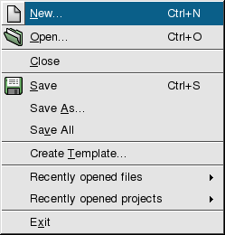
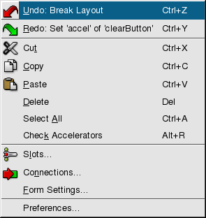
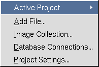
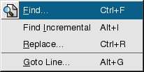
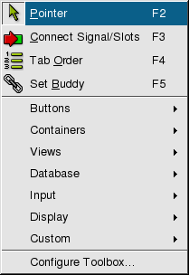
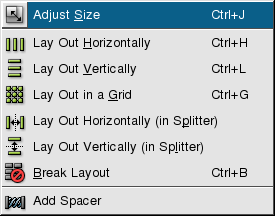
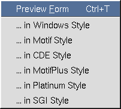
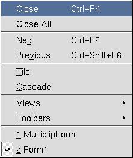
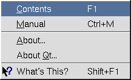

| Home | All Classes | Main Classes | Annotated | Grouped Classes | Functions |
[Prev: Reference: Key Bindings] [Home] [Next: Reference: Toolbar Buttons]
Qt Designer provides menu options that invoke the actions necessary to create applications. Many menu options lead to dialog boxes that provide additional options and functionality. The most commonly used menu options also have corresponding toolbar buttons. This chapter explains each menu option and its use. For menu options that invoke a dialog box or which have a corresponding toolbar button, there is a cross-reference to the detailed explanation that appears in the relevant chapter.

The File Menu
This menu is invoked with Alt+F, and provides the following options:
File|New
Click this menu option (or press Ctrl+N) to create a new project, form or file. This option invokes the New File Dialog.
File|Open
Click this menu option (or press Ctrl+O) to open existing projects, forms or files. The File Open Dialog is invoked through which a file name can be selected.
File|Close
Click this menu option to close the currently open project. If the project has unsaved changes, the Save Form Dialog appears.
File|Save
Click this menu option (or press Ctrl+S) to save the project along with its forms and files. For a project that has forms or files, click 'Save' to save the project before exiting. For new forms, click 'Save' and the Save Form As Dialog appears. For forms that have been saved previously click 'Save'. For new files or for files that have been changed, click 'Save'.
File|Save As
Click this menu option to save and name the current form or file. This option invokes the Save Form As Dialog.
File|Save All
Click this menu option to save every open file and form in every open project.
File|Create Template
Click this menu option to create a form template. This option invokes the Create Template Dialog dialog.
File|Recently Opened Files
Click this menu option to list the most recently opened files. Click one of the files listed to open it. Note that we recommend that you open projects rather than files. You can open a file by clicking the file's name in the project's Project Overview Window.
File|Recently Opened Projects
Click this menu option to list the most recently opened projects. Click one of the projects listed to open it.
File|Exit
Click this menu option to exit Qt Designer. If any open files have unsaved changes, the Save Form Dialog message box will appear for each of them, before Qt Designer exits. Note that for a form that has not been saved previously but has had changes made to it or that has been saved but has had changes made to it, the Save Form Dialog is invoked. Click Yes to invoke the Save Form As dialog.
See also The File Toolbar Buttons.

The Edit Menu
This menu is invoked with Alt+E, and provides the following options:
Edit|Undo
Click this menu option (or press Ctrl+Z) to undo an action. The name of the last action that was performed appears after the word 'Undo'.
Edit|Redo
Click this menu option (or press Ctrl+Y) to redo an action. The name of the last action that was performed appears after the word 'Redo'.
Edit|Cut
Click this menu option (or press Ctrl+X) to delete the selected item from the current form or file and copy it to the clipboard.
Edit|Copy
Click this menu option (or press Ctrl+C) to copy the selected item from the current form or file to the clipboard.
Edit|Paste
Click this menu option (or press Ctrl+V) to paste the clipboard item (if any) into the current form or file.
Edit|Delete
Click this menu option (or press Del) to delete the selected item from the current form or file.
Edit|Select All
Click this menu option (or press Ctrl+A) to highlight all the widgets on the current form or all the text in the current file.
Edit|Check Accelerators
Click this menu option (or press Alt+R) to verify that all the accelerators are used only once. If an accelerator is used more than once, a message box appears with the statement 'The accelerator 'x' is used 'y' times'. Click Select to highlight the widgets with the same accelerator, or click Cancel to exit the message box without taking any action.
Edit|Slots
Click this menu option to edit and create slots and functions. This option invokes the Edit Functions Dialog.
Edit|Connections
Click this menu option to invoke the View and Edit Connections Dialog.
Edit|Form Settings
Click this menu option to invoke the Form Settings Dialog.
Edit|Preferences
Click this menu option to invoke the Preferences Dialog.
See also The Edit Toolbar Buttons.

The Project Menu
This menu is invoked with Alt+O, and provides the following options:
Project|Active Project
Click this menu option to toggle between projects if there is more than one project open. You can also toggle between projects using the Active Project drop-down combobox in the The File Toolbar Buttons.
Project|Add File
Click this menu option to invoke the Add Dialog
Project|Project Settings
Click this menu option to invoke the Project Settings Dialog.
Project|Image Collection
Click this menu option to invoke the Manage Image Collection Dialog.
Project|Database Connections
Click this menu option to invoke the Edit Database Connections Dialog.
See also The File Toolbar Buttons.

The Search Menu
This menu is invoked with Alt+S, and provides the following options:
Search|Find
Click this menu option (or press Ctrl+F) to invoke the Find Text Dialog.
Search|Find Incremental
Click this menu option (or press Alt+I) to place the cursor in the text box located next to the Find toolbar button. Type characters into the text box; as you type, Qt Designer will highlight the first occurrence of the text that it finds in the file. Press the Enter key to go to the next occurrence of the text. Press the Esc key once you have found the word you are looking for to place the cursor in the editor.
Search|Replace
Click this menu option (or press Ctrl+R) to invoke the Replace Text Dialog to replace specific words or characters.
Search|Goto line
Click this menu option (or press Alt+G) to invoke the Goto Line Dialog to go to a specific line in the file.
See also The Search Toolbar Buttons.

The Tools Menu
This menu is invoked with Alt+T, and provides the following options:
Tools|Pointer
Click this menu option (or press F2) to de-select any selected widget toolbar button. The pointer is also used to stop inserting new widgets on the form if you double clicked a widget toolbar button. Press the Esc key to return to the pointer at any time.
Tools|Connect Signals and Slots
Click this menu option (or press F3) to connect signals and slots. Click on a widget and drag the connection line to the widget (or form) that you want to connect to. Release the mouse button and the View and Edit Connections Dialog will appear.
Tools|Tab Order
Click this menu option (or press F4) to set the tab order for all the widgets on the form that can accept keyboard focus. Choose this option and blue circles with numbers on them appear next to the widgets. Click the widget that you want to be first in the tab order, then click the widget that should be next in the tab order, and continue until all the widgets have the tab order numbers you want. If you make a mistake, double click the first widget and start again. Press Esc to leave tab order mode. If you want to revert your changes, leave tab order mode, then undo.
Tools|Set Buddy
Click this toolbar button (or press F12) to set a buddy to a label. Then click on a label and drag the line to the widget that you want to be the buddy. Release the mouse button and the buddy is set.
Tools|Buttons|PushButton
Click this menu option and then click the form to place a PushButton on the form.
Tools|Buttons|ToolButton
Click this menu option and then click the form to place a ToolButton on the form.
Tools|Buttons|RadioButton
Click this menu option and then click the form to place a RadioButton on the form. It is recommended that you place RadioButtons inside ButtonGroups so that Qt will automatically ensure that only one RadioButton in the group is active at any one time.
Tools|Buttons|CheckBox
Click this menu option and then click the form to place a CheckBox on the form.
Tools|Containers|GroupBox
Click this menu option and then click the form to place a GroupBox on the form.
Tools|Containers|ButtonGroup
Click this menu option and then click the form to place a ButtonGroup on the form.
Tools|Containers|Frame
Click this menu option and then click the form to place a Frame on the form.
Tools|Containers|TabWidget
Click this menu option and then click the form to place a TabWidget on the form. To add or remove tabs, right click the tab widget and choose 'Add Page' or 'Remove Page'.
Tools|Views|ListBox
Click this menu option and then click the form to place a ListBox on the form.
Tools|Views|ListView
Click this menu option and then click the form to place a ListView on the form.
Tools|Views|Icon View
Click this menu option and then click the form to place an IconView on the form.
Tools|Views|Table
Click this menu option and then click the form to place a Table on the form.
Tools|Database|DataTable
Click this menu option and then click the form to place a DataTable on the form.
Tools|Database|DataBrowser
Click this menu option and then click the form to place a DataBrowser on the form.
Tools|Database|DataView
Click this menu option and then click the form to place a DataView on the form.
Tools|Input|LineEdit
Click this menu option and then click the form to place a LineEdit on the form.
Tools|Input|SpinBox
Click this menu option and then click the form to place a SpinBox on the form.
Tools|Input|DateEdit
Click this menu option and then click the form to place a DateEdit on the form.
Tools|Input|TimeEdit
Click this menu option and then click the form to place a TimeEdit on the form.
Tools|Input|DateTimeEdit
Click this menu option and then click the form to place a DateTimeEdit on the form.
Tools|Input|TextEdit
Click this menu option and then click the form to place a TextEdit on the form.
Tools|Input|ComboBox
Click this menu option and then click the form to place a ComboBox on the form.
Tools|Input|Slider
Click this menu option and then click the form to place a Slider on the form.
Tools|Input|ScrollBar
Click this menu option and then click the form to place a Scrollbar on the form.
Tools|Input|Dial
Click this menu option and then click the form to place a Dial on the form.
Tools|Display|TextLabel
Click this menu option and then click the form to place a TextLabel on the form.
Tools|Display|PixmapLabel
Click this menu option and then click the form to place a PixmapLabel on the form.
Tools|Display|LCDNumber
Click this menu option and then click the form to place a LCDNumber on the form.
Tools|Display|Line
Click this menu option and then click the form to place a Line on the form.
Tools|Display|ProgressBar
Click this menu option and then click the form to place a ProgressBar on the form.
Tools|Display|TextBrowser
Click this menu option and then click the form to place a TextBrowser on the form.
Tools|Custom|Edit Custom Widgets
Click this menu option to invoke the Edit Custom Widgets Dialog.
Tools|Custom|
Click this menu option and then click the form to place the Custom Widget on the form. Note that this menu option only appears if you have created a widget using Tools|Custom|Edit Custom Widgets.
Tools|Configure Toolbox
Click this menu option to invoke the Configure Toolbox Dialog.
See also The Tools Toolbar Buttons.

The Layout Menu
This menu is invoked with Alt+L, and provides the following options:
Layout|Adjust Size
Click this menu option (or press Ctrl+J) to adjust the size of the widget to it's recommended size.
Layout|Lay Out Horizontally
Click this menu option (or press Ctrl+H) to lay out the selected widgets or layouts side by side. Use Shift+Click to select each widget or layout, and then choose this menu option to group them horizontally. Note that for complex widgets it is sometimes easiest to select widgets and layouts by clicking them in the Widgets tab of the Object Explorer Window. If only one widget is selected, its child widgets will be laid out horizontally.
Layout|Lay Out Vertically
Click this menu option (or press Ctrl+L) to lay out the selected widgets one above the other. Use Shift+Click to select each widget or layout, and then choose this menu option to group them vertically. Note that for complex widgets it is sometimes easiest to select widgets and layouts by clicking them in the Widgets tab of the Object Explorer Window. If only one widget is selected, its child widgets will be laid out vertically.
Layout|Lay Out in a Grid
Click this menu option (or press Ctrl+G) to lay out the selected widgets in a grid. If only one widget is selected, its child widgets will be laid out in a grid.
Layout|Lay Out Horizontally (in Splitter)
Click this menu option to lay out the selected widgets or layouts side by side with a splitter between each. Use Shift+Click to select each widget or layout, and then choose this menu option to group them horizontally. Note that for complex widgets it is sometimes easiest to select widgets and layouts by clicking them in the Widgets tab of the Object Explorer Window.
Layout|Lay Out Vertically (in Splitter)
Click this menu option to lay out the selected widgets or layouts one above the other with a splitter between each. Use Shift+Click to select each widget or layout, and then choose this menu option to group them vertically. Note that for complex widgets it is sometimes easiest to select widgets and layouts by clicking them in the Widgets tab of the Object Explorer Window.
Layout|Break Layout
Click this menu option (or press Ctrl+B) to break a layout. Click on the layout, then select this option; the layout is deleted.
Layout|Add Spacer
Click this menu option to add a vertical or horizontal spacer to widgets that take up too much space on the form. The spacer consumes extra space in the layout.
See also The Layout Toolbar Buttons.

The Preview Menu
This menu is invoked with Alt+P, and provides the following options:
Preview|Preview Form
Click this menu option (or press Ctrl+T) to preview the form within Qt Designer.
Preview|...in Windows Style
Click this menu option to preview the form in the Windows style.
Preview|...in Motif Style
Click this menu option to preview the form in the Motif style.
Preview|...in CDE Style
Click this menu option to preview the form in the CDE style.
Preview|...in MotifPlus Style
Click this menu option to preview the form in the MotifPlus style.
Preview|...in Platinum Style
Click this menu option to preview the form in the Platinum style.
Preview|...in SGI Style
Click this menu option to preview the form in the SGI style.

The Window Menu
This menu is invoked with Alt+W, and provides the following options:
Window|Close
Click this menu option (or press Ctrl+F4) to close the window that is currently active.
Window|Close All
Click this menu option to close all the windows that are currently open.
Window|Next
Click this menu option (or press Ctrl+F6) to make the next window active. The order is the order in which the windows were opened.
Window|Previous
Click this menu option (or press Ctrl+Shift+F6) to make the previous window active. The order is the order in which the windows were opened.
Window|Tile
Click this menu option to arrange all the open files and forms side by side so that each window is visible.
Window|Cascade
Click this menu option to stack all the open file and forms, one on top of the other, but with an overlap so that each window's title bar is visible.
Window|Views|Project Overview
Click this menu option to make the Project Overview Window visible, or to hide it if it is already visible. If the window is currently visible, a check mark will appear next to the name in the menu.
Window|Views|Property Editor/Signal Handlers
Click this menu option to make the Property Editor/Signal Handlers Window visible, or to hide it if it is already visible. If the window is currently visible, a check mark will appear next to the name in the menu.
Window|Views|Object Explorer
Click this menu option to make the Object Explorer Window visible, or to hide it if it is already visible. If the window is currently visible, a check mark will appear next to the name in the menu.
Window|Views|Line Up
Click this menu option to eliminate any extra space between toolbars and line them up next to each other all at once, rather than moving each individual toolbar into place.
Window|Toolbars|File
Click this menu option to make the File toolbar buttons visible, or to hide them if they are already visible. If the toolbar buttons are currently visible, a check mark will appear next to the name in the menu.
Window|Toolbars|Edit
Click this menu option to make the Edit toolbar buttons visible, or to hide them if they are already visible. If the toolbar buttons are currently visible, a check mark will appear next to the name in the menu.
Window|Toolbars|Search
Click this menu option to make the Search toolbar buttons visible, or to hide them if they are already visible. if the toolbar buttons are currently visible, a check mark will appear next to the name in the menu.
Window|Toolbars|Layout
Click this menu option to make the Layout toolbar buttons visible, or to hide them if they are already visible. If the toolbar buttons are currently visible, a check mark will appear next to the name in the menu.
Window|Toolbars|Tools
Click this menu option to make the Tools toolbar buttons visible, or to hide them if they are already visible. If the toolbar buttons are currently visible, a check mark will appear next to the name in the menu.
Window|Toolbars|Buttons
Click this menu option to make the Buttons toolbar buttons visible, or to hide them if they are already visible. If the toolbar buttons are currently visible, a check mark will appear next to the name in the menu.
Window|Toolbars|Containers
Click this menu option to make the Containers toolbar buttons visible, or to hide them if they are already visible. If the toolbar buttons are currently visible, a check mark will appear next to the name in the menu.
Window|Toolbars|Views
Click this menu option to make the Views toolbar buttons visible, or to hide them if they are already visible. If the toolbar buttons are currently visible, a check mark will appear next to the name in the menu.
Window|Toolbars|Database
Click this menu option to make the Database toolbar buttons visible, or to hide them if they are already visible. If the toolbar buttons are currently visible, a check mark will appear next to the name in the menu.
Window|Toolbars|Input
Click this menu option to make the Input toolbar buttons visible, or to hide them if they are already visible. If the toolbar buttons are currently visible, a check mark will appear next to the name in the menu.
Window|Toolbars|Display
Click this menu option to make the Display toolbar buttons visible, or to hide them if they are already visible. If the toolbar buttons are currently visible, a check mark will appear next to the name in the menu.
Window|Toolbars|Custom
Click this menu option to make the Custom toolbar buttons visible, or to hide them if they are already visible. If the toolbar buttons are currently visible, a check mark will appear next to the name in the menu.
Window|Toolbars|Help
Click this menu option to make the Help toolbar buttons visible, or to hide them if they are already visible. If the toolbar buttons are currently visible, a check mark will appear next to the name in the menu.
Window|Toolbars|Line Up
Click this menu option to eliminate extra space between toolbars and line them up next to each other all at once, rather than moving each individual toolbar into place.
Window|n
Click one of the numbered menu options that list the currently open files and forms to switch to the named file or form.

The Help Menu
This menu is invoked with Alt+H, and provides the following options:
Help|Contents
Click this menu option (or press F1) to invoke the Qt Assistant application which provides on-line help. The on-line help is context sensitive, so you can type the item you want more information about in the line edit and Qt Assistant will automatically find it if it is available.
Help|Manual
Click this menu option (or press Ctrl+M) to invoke the Qt Assistant application which opens showing this manual.
Help|About
Click this menu option to invoke the About Qt Designer dialog which gives the version number and some licensing information.
Help|About Qt
Click this menu option to invoke a dialog which provides information about Qt.
Help|What's This?
Click this menu option to invoke a small question mark that is attached to the mouse pointer. Click on a feature which you would like more information about. A popup box appears with information about the feature.
See also The Help Toolbar Button.
[Prev: Reference: Key Bindings] [Home] [Next: Reference: Toolbar Buttons]
| Copyright © 2007 Trolltech | Trademarks | Qt 3.3.8
|